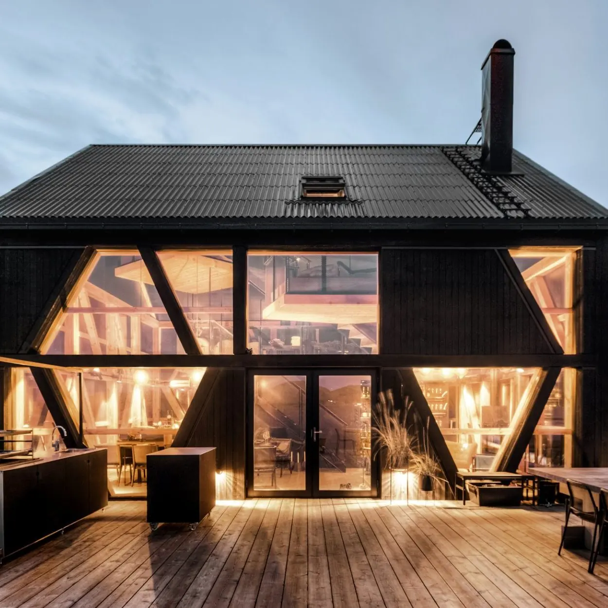
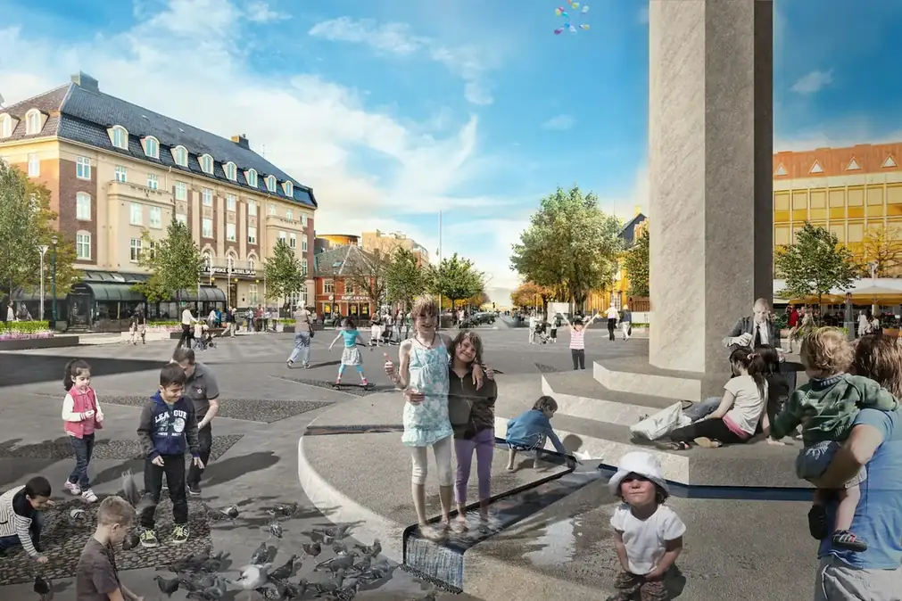
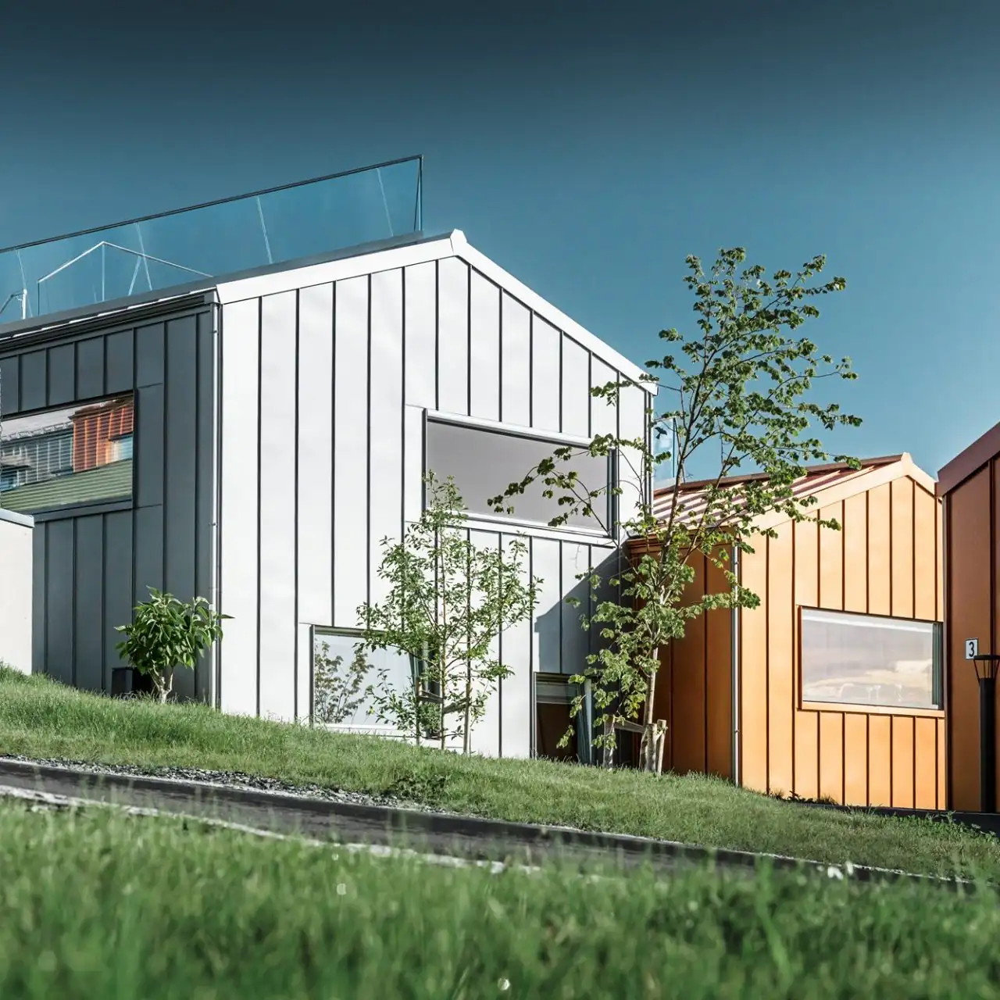
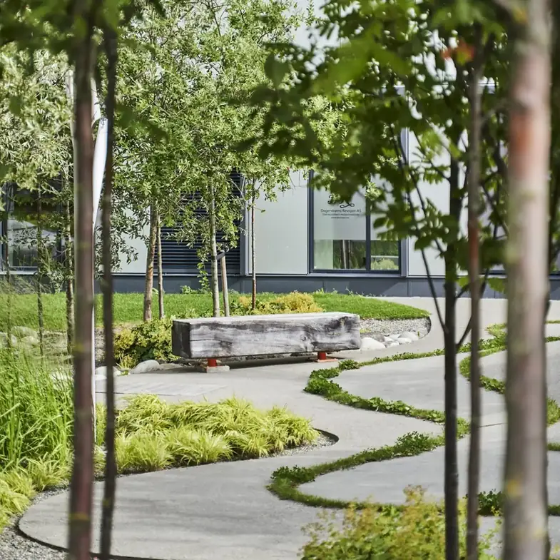

Arkitektur · landskap · Trondheim
Vi skaper steder der det er godt å bo, arbeide, leke og leve
agraff arkitektur tegner hus, landskap og byrom — alltid med utgangspunkt i stedet de skal stå. Mange ønsker, liten tomt gir ofte de beste løsningene.
StedTrondheim
FagBygg · landskap · plan
Kontakt73 84 13 10
Utvalgte arbeider
Fra matstudio i havgapet til arenabygg og byrom. Hvert prosjekt tar utgangspunkt i stedet og menneskene som bruker det.

Stokkøy matstudio
Et moderne naust med røtter i norsk kystbyggtradisjon — med sjømatråvarene rett ved brygga.

Torvet i Trondheim
Byens storstue skal brukes til alt — fra kroningsfester til gatesang, og hundrevis av mennesker daglig.

Enebolig i skråning
Lure løsninger som gir store muligheter og opplevelser på en liten tomt.

Strindfjordvegen park
Man går gjennom parken fra øy til øy via trebroer og veier, med sjømerkene som retningsgiver.
«Vi jobber alltid ut ifra en tanke om at alt vi bygger og endrer skal fungere i sammenheng med sine omgivelser.»
Kan arkitektur alene bidra til positive endringer?
Absolutt, sier vi. Les om miljøengasjement, gjenbruk, energi og bærekraft i arkitekturen vår.
Gjenbruk
Det mest bærekraftige er ofte det som allerede står. Vi ser på hva som kan beholde, repareres og bygges videre på.
Energi
Form, orientering og materialvalg avgjør energibruken i tiår framover. Det avgjøres tidlig.
Landskap
Bygg og uteområder er ett prosjekt. Vi tegner dem sammen, ikke hver for seg.
Samfunn
Arkitektur skal tåle hverdagen til mange mennesker, ikke bare se bra ut på bilde.
Har du en tomt eller et bygg i tankene?
Ta kontakt tidlig. De beste løsningene kommer før tegningene er låst.